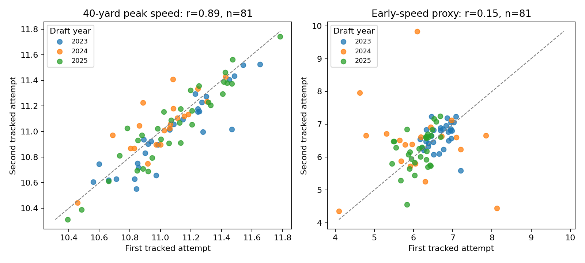

Matematiksel Tanım ve Kalite Kriterleri
x₀ = median(x[0:5]), Çıkış Başlangıcı: x(t) − x₀ > 1.5 yd (≥ 0.4 s)
ỹ(t) = SavitzkyGolay₅,₂(y(t)), v_y(t) = dỹ(t) / dt
ỹ(t) = SavitzkyGolay₅,₂(y(t)), v_y(t) = dỹ(t) / dt
- Kalite Filtreleri: $\Delta t \in (0, 0.21]\text{ s}$, ayna fazı süresi $\ge 3.0\text{ s}$, ve en az 2 geçerli yanal yön değişimi (reversal) ($\ge 0.25\text{ yd}$ genlik, $\ge 0.5\text{ yd/s}$ giriş hızı).
- Çıkarılan 2 Faz Özelliği:
lateral_speed_p75: Ayna fazındaki $|v_y(t)|$ dağılımının 75. yüzdeliği (yd/s).reversal_recovery: Yön değişiminden0.3–0.6 ssonraki ortalama $|v_y|$'nin, dönüşten0.5–0.2 sönceki ortalama $|v_y|$'ye oranı.
- Karşılaştırma Özelliği (
whole_drill_speed): Tüm kayıt boyunca 3-kare medyan yumuşatılmış toplam hızın 95. yüzdeliği. - Sınır Sağlamlığı: Çıkış eşiği
1.0 ydveya2.0 ydyapıldığında oyuncu sıralamaları Spearman r = 0.992 ve 0.998 ile korunmaktadır.


| Hedef Tanımı | Test Yılı ($n$) | Ortalama Ref MAE | Klasik Combine MAE | + Tüm-Kayıt Hızı (Çıkış) | + Mirror Fazı Özellikleri | Mirror vs. Klasik $\Delta$ MAE (%95 GA) |
|---|---|---|---|---|---|---|
| 1. Birincil: İkili Baskı (Süre Düzeltmeli) | 2024 ($16$) / 2025 ($17$) | 1.971 / 2.405 | 1.972 / 2.502 | 1.922 / 2.652 (Kötüleşti) | 1.909 / 2.482 | 2025: +0.019 yp [−0.105, +0.135] (Full-refit: [−0.264, +0.353]) |
| 2. Duyarlılık: İkili Baskı (Süresiz) | 2024 ($16$) / 2025 ($17$) | 1.996 / 2.325 | 1.876 / 2.351 | 1.871 / 2.446 (Kötüleşti) | 1.888 / 2.365 | 2025: −0.014 yp [−0.110, +0.081] |
| 3. Sürekli: NGS Zirve Baskı Olasılığı | 2024 ($16$) / 2025 ($17$) | 2.107 / 2.164 | 2.101 / 2.189 | 2.087 / 2.215 (Kötüleşti) | 2.113 / 2.157 | 2025: +0.032 yp [−0.139, +0.195] (RMSE: 2.639 → 2.532) |


OL ve WR Bulgularının Metodolojik Karşılaştırması
| Doğrulama Basamağı | WR 40-Yard Zirve Hız | OL Mirror Yanal Hız |
|---|---|---|
| 1. Faz Temizliği | Tek fazlı düz sprint | Zorunlu (%100 çıkış sprinti kirlenmesi) |
| 2. Tekrar Güvenilirliği ($r_{XX}$) | Çok Yüksek ($r = 0.893$) | Düşük ($r = 0.104$, koç yönlendirmeli) |
| 3. Maç Hareketiyle İlişki | Anlamlı ($r = 0.382$) | Zayıf ($r = 0.053$ ham, $0.120$ arındırılmış) |
| 4. Klasik Testle Örtüşme | 40-yard süresiyle $r = -0.852$ (Aynı bilgi) | 40-yard süresiyle dik (Farklı eksen) |
| 5. İleri-Yıl Ek Tahmin Gücü | 2024: %15.1 iyileşme, 2025: −%2.6 (Kararsız) | 2024 ve 2025'te küçük pozitif, GA sıfırı kesiyor |
Ana Ders: Bir sensör metriği ya klasik testle aynı bilgiyi kopyaladığı için (WR zirve hız) ya da koç yönlendirmeli drilde tekrar güvenilirliği düşük olduğu için (OL yanal hız) ileri-yıl tahmininde tek başına mucize yaratmaz. Her iki darboğazı da teşhis eden çerçevemiz tam bir analitik şablon sunar.